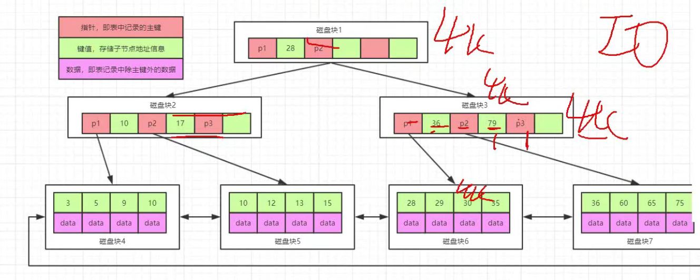
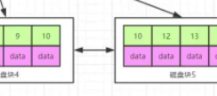
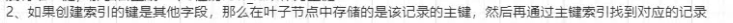
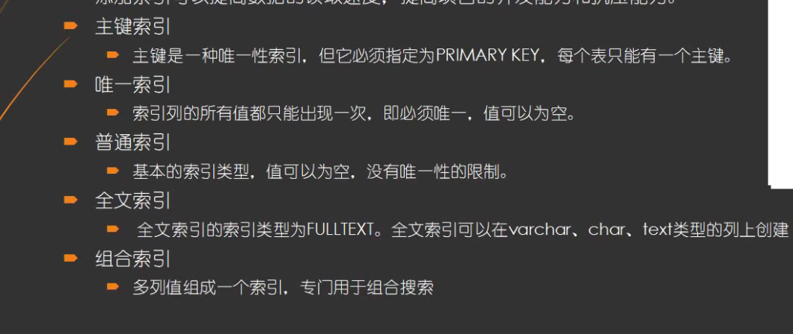
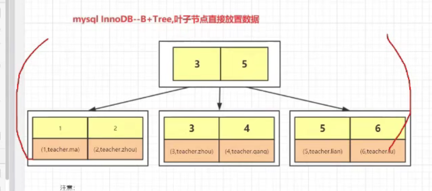

数据库调优
了解两个基本概念
1.基数：单个列唯一键的数量叫基数，通俗的讲就是性别列只有两个值，男或女，则性别列的基数为2，同样的类似工号这种无重复可以作为主键的字段，他的基数就等于他的行数，反之亦然。
2.返回数据的比例：查询数据/查询范围内的总数据数。
一.索引原理

b+树，在b树（平衡多路查找树）的基础上，在非叶子节点存储索引，叶子节点存储数据，用类似二分查找的方式实现，如图中28左边指针P1指向<28的值，右边指针指向>28的值。

同时叶子节点之间是一个链式环结构，互相连接的。
这样的好处是，如果要存储千万级数据(N，存放于叶节点中)可以将数据按子节点的数目a 进行 loga N 来获取查找次数。

innodb和MYLSam的区别就是直接地址和间接地址，一个直接从两次B+树中直接读到索引值，第二个是同样的操作但是读到的是地址值，地址值里面放着对应的索引值。
二，索引分类

前三个应用比较广泛，后两个作了解即可。
选择唯一键时，分为自然键和代理键，自然键，自然键因为在实现数据软删除时较为麻烦被舍弃，目前用的比较多的是代理键，公司项目用的代理键的BIgint来存储formId，要求唯一且不为空。
回表

像面表的可以理解为针对其ID所作的索引

当我们查询name较为多的时候，就会建立一个针对name的普通索引，普通索引不像存储ID索引的B+树 一个ID对应其记录的所有数据，而是仅对应一个ID，当查到名字对应的ID时，又拿着ID去第一张图中查找其具体值，这个操作就叫做回表。
覆盖索引 覆盖索引（covering index）指一个查询语句的执行只用从索引中就能够取得，不必从数据表中读取。也可以称之为实现了索引覆盖。 如果一个索引包含了（或覆盖了）满足查询语句中字段与条件的数据就叫做覆盖索引。
哈希索引
哈希索引（hash index）基于哈希表实现，只有精确匹配索引的所有列的查询才有效，对于每一行数据，存储引擎都会对所有索引列计算一个哈希码，不同键值的行计算出来的哈希码也不一样，哈希码保存在哈希索引中，同时哈希表中保存指向每个数据的指针，简单的说哈希索引是用于精准查找的索引，如果其他索引就会浪费内存空间。因为读取hash表是将整个读取到内存中。
聚簇索引和非聚簇索引
聚簇指的是在索引中存放记录的所有值，而不是仅仅存放对应的主键值。
前缀索引
适用于用字符串的时候，以前面几个字符为索引，至于是几个可以由count（*）来统计，当字符串n 和n+1 之间数量差距很小时就可以以前n个字符简历索引。